Hold the mouse button down on images to enlarge them
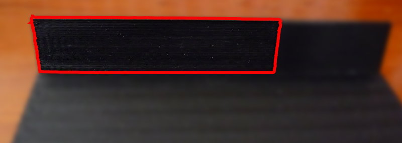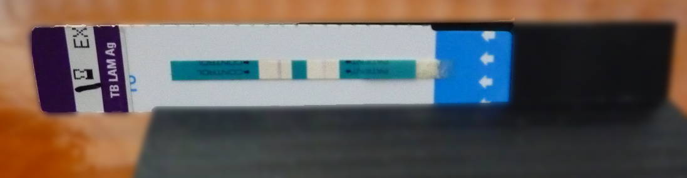
Place the strip into the small, thin slot in the stand. Slide it as far right as possible. It should go about two thirds of the width of the stand with a bit of the strip hanging over the left edge. It is important to note that the writing on the strip is upside down, so that the patient area on the right hand side.
Place the phone in the long, wide slot, opposite the strip. This slot has a translucent lens covering part of it. Slide the phone all the way along the slot, with the screen facing out and the back camera facing towards the strip.
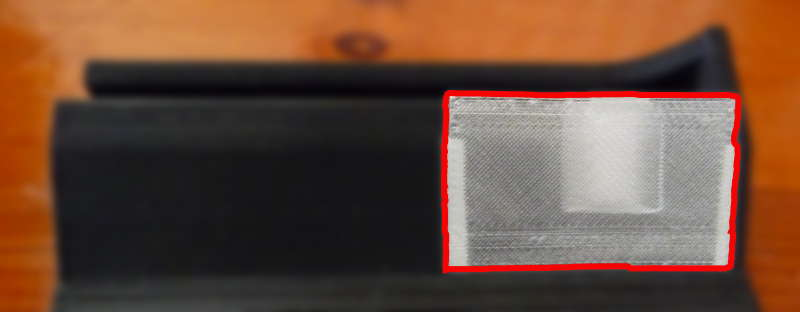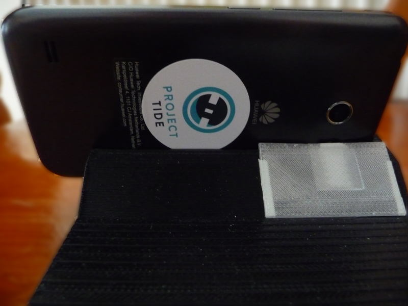
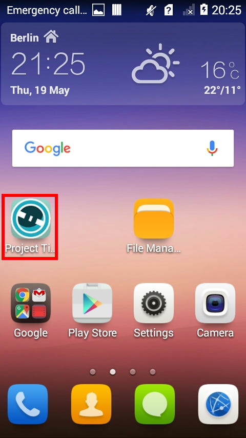
Tap on the Project Tide app to launch the app.
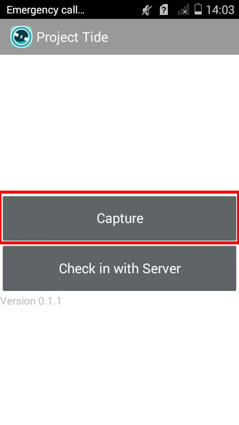
Once the app is loaded, tap on the "Capture" button.
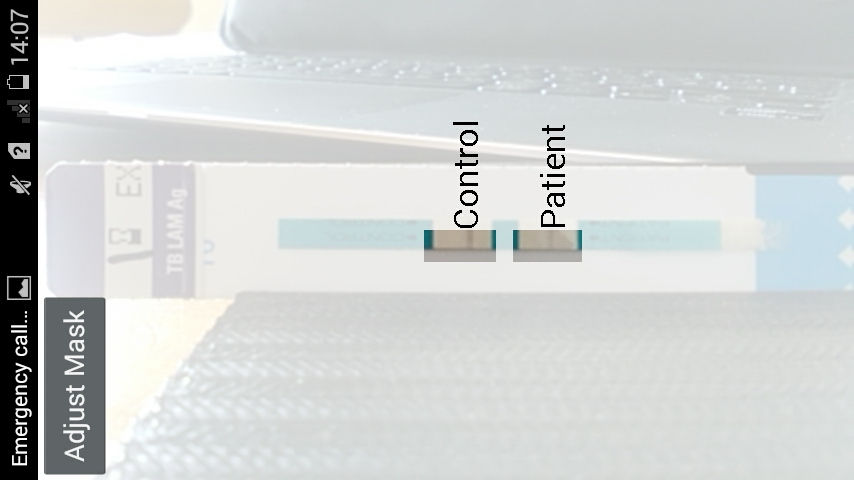
This will load the capture screen (as pictured above). If the mask is aligned correctly, tap on the screen and wait.
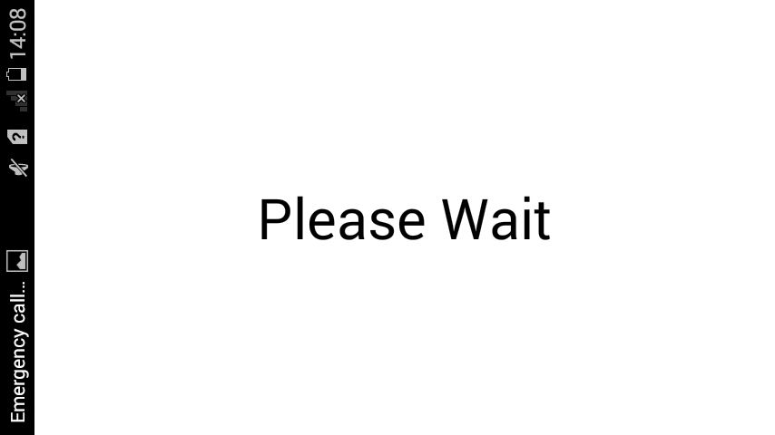
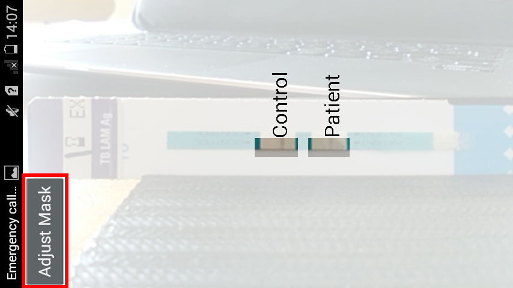
If the mask is not aligned with the control and patient areas, then tap on the "Adjust Mark" button. This brings up a similar screen to the capture screen.
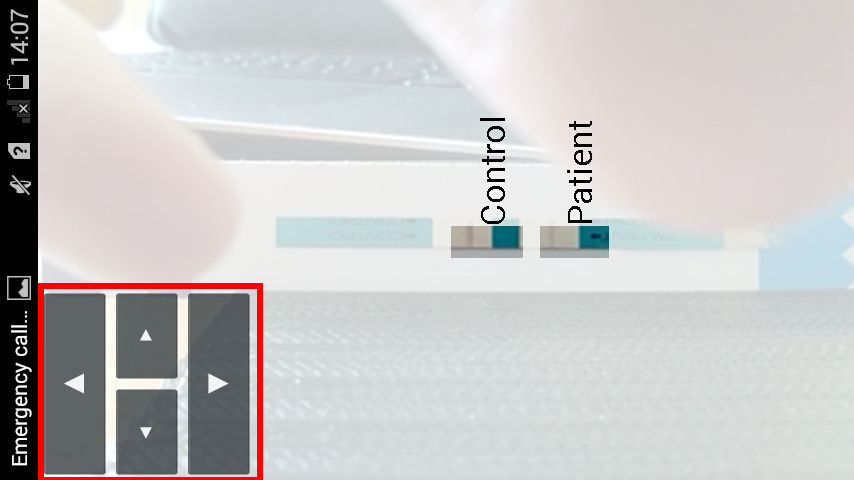
The main difference is in the bottom left corner. These buttons allow you to move the mask around. Tap on the buttons to move the mask into the desired position and then tap on the phone's back button to go back to the capture screen.
Once the waiting is done the results of the analysis will be displayed.
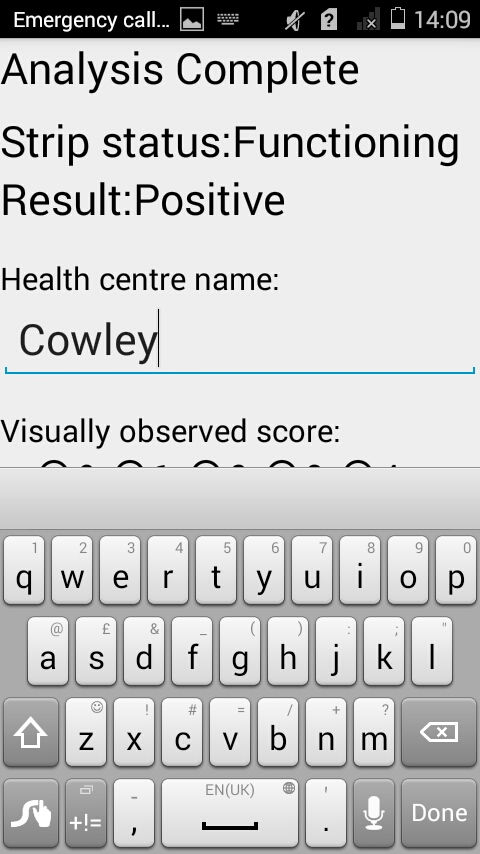
The strip status indicates if the control part of the strip is still active. If the control part has faded, then the enzyme is no longer functioning and the strip should be thrown away, and the test redone.
The result given below is the analysis of the patient area. The result is positive, negative or (in the case of the control failing) unanalysed. Positive means that the patient's urine has significant LAM in it.
For the purposes of judging the effectiveness of Project Tide, we ask for two bits of information on the strip being analysed. Firstly, the name of the health centre the app is being used in. Secondly, the score the user gives the strip (0 being negative and 1 to 4 being positive, as detailed on the reference card).
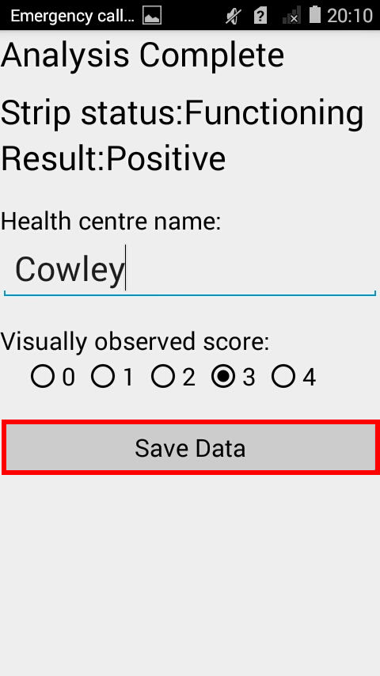
Once those fields are filled in, hit the "Save Data" button. Once the data is saved the app will return to the capture screen.
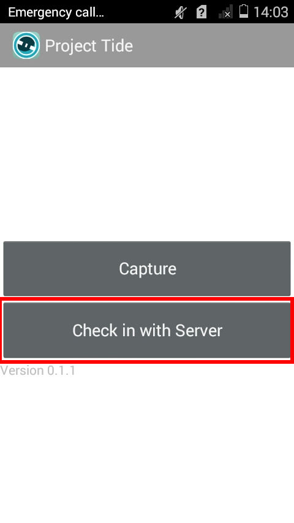
To send data that has been collected, you need to connect the phone to a WIFI network. Once a connection is established, tap the "Check In With Server" button. This will send the data to the Project Tide server. It will also check with the server to see if there is a newer version of the app to download.
The app could take some time to upload the data and download the newest version, depending on the speed of your connection. If there is a newer version downloaded then the installer will launch automatically. Follow the steps of the installer.
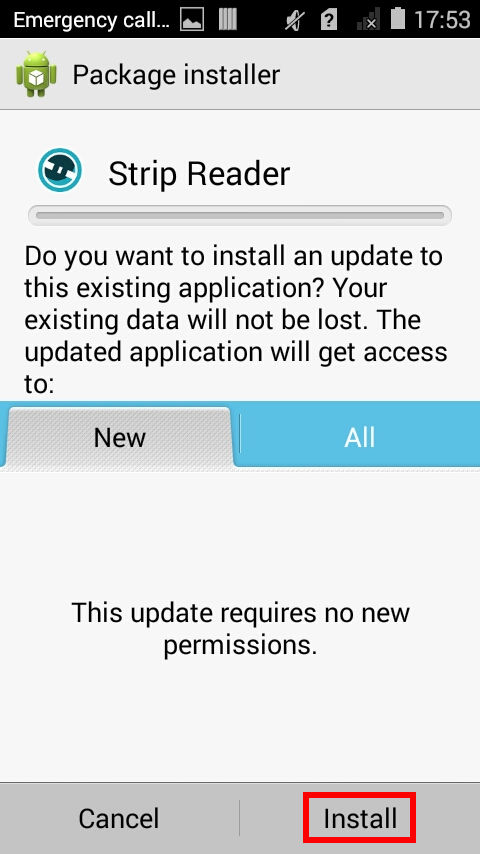 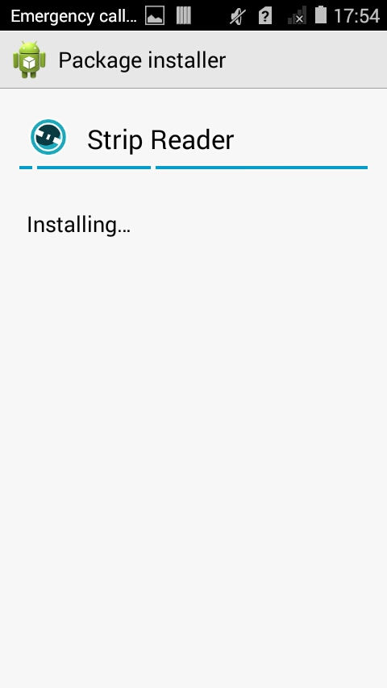 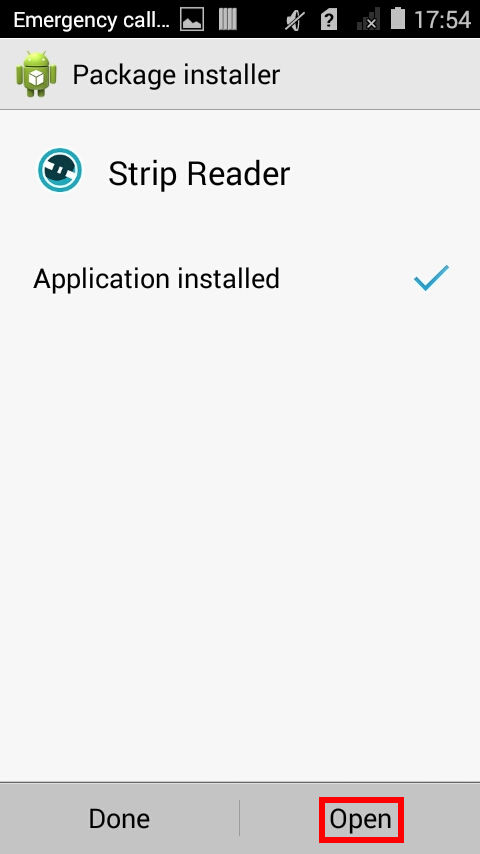
Once the installation is done, tap the open button and you'll be back in the app.